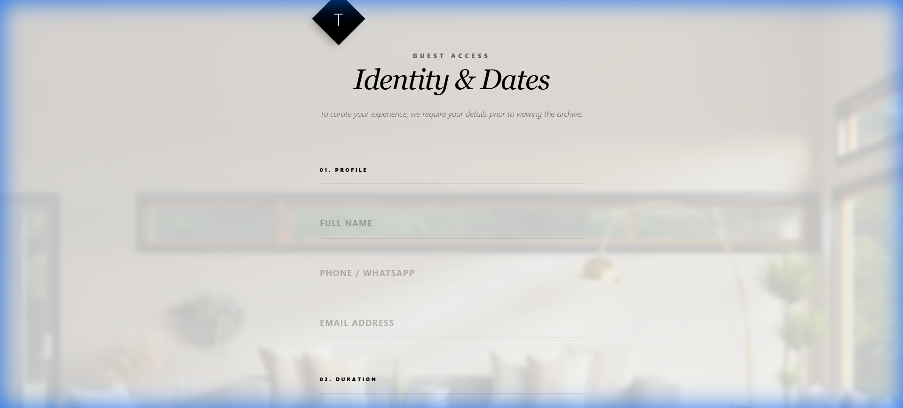

TONIGHT®BOOK YOUR NEXT STAY ↗

BROWSE → SELECT → BOOK01 / 04
01 — FULL-STACK DEVELOPMENTGood stays.
Good stays.
Less friction.
An end-to-end room and homestay booking platform, built to make finding a place and booking it feel effortless.
Explore Tonight ↗